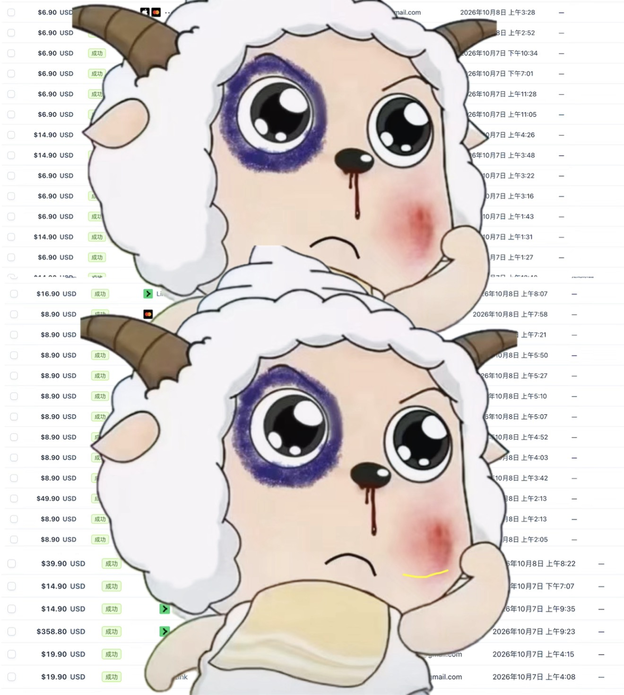

一、自我介绍和之前的上站经历
大家好，我是Altman。
我是今年5 月6 日进群的。在这次国庆上站大行动之前,我一共上过 6个站,其中世界杯相关的1 个、老词站2 个、新词站 3 个。
之前最好的成绩，是其中一个新词站，最高做到了日UV 4200。
但是有一个很尴尬的问题：虽然有流量，却基本没有收入，收入几乎为零。
所以后来，我就把重心放到了老词订阅站上。
其中一个老词站，我在外链和Google Ads 上投入了超过1w5 人民币，但是最终也没有带来什么转化。
这段经历其实挺打击我的。花了不少时间、精力和金钱，虽然也有一些流量成绩，但始终没有真正跑通从流量到收入的闭环.
二、为什么决定重新开始做新词站？
其实之前，我对新词一直有一些偏见。
我总觉得新词就是蹭热点，没有什么长期效应.而且新词也很卷,群里那么多上站经验丰富的老选手，自己很难卷得过他们，更别提出单了。
所以很长一段时间，我都没有认真去做新词订阅站。
但是后来我开始反思自己。
我发现这些想法，其实很大程度上是我给自己找的理由，是给自己的懒惰和不行动找的借口。
我都没有真正认真去尝试,怎么就知道自己做不出来呢?
所以从9月底开始，我就重新把注意力放到了新词上，开始频繁地找词。
不过很快又遇到了一个问题：自己手动找词的效率实在太低了。
之前我也想过，通过 Google Trends API写一套自动化找词的方案，但是一直没有找到合适、稳定可用的API，这件事也就一直没有真正落地。
正巧，就在这个时候，飞哥上线了新词监控服务。
我看到之后，几乎没怎么犹豫，直接订阅了三个月.
当时我就在想：飞哥这个服务上线得也太是时候了！
刚开始的几天,我会把飞哥监控到的信息转发给 GPT,让GPT帮我分析哪些词值得做。
其中有一个词叫Hotel Lobby AI。
GPT当时告诉我，这个词可以做.
但是我自己去看Google Trends，发现它的趋势已经开始下降了，感觉热度马上就要回到原点，于是我就放弃了这个词。
结果后来，看到群友陆续出单，还有飞哥分享的出单消息（我感觉可能是这个词）。
这让我开始意识到：我之前对新词的判断可能存在问题。
后来我也补上了 Hotel Lobby AI这个站，但是那个时候热度已经过去了，网站也没有获得什么流量。
这件事给我的触动挺大的.
有时候不是没有机会，而是机会出现的时候，自己想得太多、判断得太早,反而没有真正行动。
另外，在使用飞哥新词监控服务的过程中，我也获得了一些灵感，进一步完善了自己的新词监控方案。
三、国庆期间的完整上站经历
时间来到10 月 5 日晚上。
那天我又看到了一个新词，情况和之前Hotel Lobby AI那次有点相似。
但这一次，我想到了之前错过机会的经历。
我告诉自己：这次不管怎么样，先上站再说，今天看到,今天就做.
于是10月5 日晚上，我注册了域名，并且当天就把第一版网站上线了。
上线之后，我并没有停下来，而是一边继续找词，一边开发其他网站。
当时我的想法比较简单：只要这个词有一定搜索量，而且趋势正在上升，我就先尝试做出来。
从10 月 5日晚上，一直忙到10月 6 日凌晨 4点左右，我一口气上线了 3 个新词站.
这中间还发生了一件特别让我兴奋的事情。
就在 10 月 6日凌晨，我还在开发另外两个站的时候，第一个站已经出单了！
这是我之前上了那么多站，却一直没能真正获得的正反馈。
说实话，那一刻真的很兴奋，也瞬间有了继续熬夜做另外两个站的动力。
等到10月 6日早上醒来，我发现 3 个站里面已经有 2个站出单了。
这进一步坚定了我的想法，于是10 月 6 日当天，我又上线了第4个站.
到了 10月7 日早上,我一觉醒来，又收到了一个惊喜：
第4个站出了一笔金额比较大的年付订单！
截至 10 月8 日早上 7点，这次国庆期间上线的 4 个新词站，已经全部出单。
从之前 6 个站基本零收入，到这次 4 个新词站全部出单，这个变化还是挺让我惊喜的。
当然，这只是短短几天的成绩,后续流量能维持多久、订阅能不能持续，还有待验证。
但是至少，这一次在短时间内我真正跑通了从找词、开发上线、获取流量到用户付费的完整过程。
四、网站数据和流量来源复盘
下面分享一下这4 个站的数据。
截至 10 月 8 日早上：
| 指标 | A 站 | B站 | C 站 | D 站 |
|---|---|---|---|---|
| UV | 300+ | 40+ | 600+ | 100+ |
| 注册用户 | 50+ | 30+ | 400+ | 30+ |
| 付费用户 | 20 | 2 | 56 | 4 |
| 注册付费转化率（约） | 32％ | 6.7％ | 12% | 13% |
最多的站出单量超过 70 单，总共出单超过100单。
这次和之前最大的区别就是，不仅仅有流量，而且真的有用户愿意付费。

流量来源
这几个网站的流量，大部分来自Google自然搜索。
另外，其中一个网站还获得了来自ChatGPT 的流量。
新站冷启动
在新站冷启动方面,我也用了一个比较简单的方法:
因为之前已经上过一些网站，所以如果老站和新站之间有一定相关性，我就会从老站给新站导一些流量.
付费用户地区
目前付款的用户主要来自美国、加拿大以及部分北欧国家，整体以发达国家市场为主.
这次也让我更加直观地看到，海外用户确实愿意为能够满足自己需求的 AI 工具付费。
不过目前只是初步的数据结果，后续还需要继续观察这些站点的流量、付费转化和续费情况。
五、这次上站有哪些收获？
我觉得这次最大的收获就是六个字：别多想，就是干!
如果说上一个站的成功率只有 10％，那我们想提高成功的机会，最直接的方法就是多上站、多尝试。
不要把所有希望都寄托在自己特别看好的某一个词上，也不要因为一个词没做起来，就开始怀疑自己。
要学会雨露均沾。
只要试错成本可控,一个词有机会，就先做出来，让市场给我们答案，而不是自己在脑子里反复分析，最后什么都没做。
第二个收获就是，之前所有的积累都不会白费。
因为之前已经上过那么多站，踩过那么多坑，积累了上站的经验，也有了自己的一套模板。
这次才能快速复用，快速开发，快速上线。
回头来看,之前那些没有出单的网站，甚至那些花了钱却没有转化的经历,也并不是毫无价值.
它们都在为后面的突破做准备.
第三个收获就是，不要看到一个词已经有很多人注册了域名，就害怕了，不敢上站。
很多人只是先把域名注册了，后面并没有真的把网站做出来.所以看到相关域名被注册了不少，也不用马上觉得自己没机会了.觉得这个词值得尝试，就大胆去上，别还没开始，就先把自己劝退了。
另外，这次上站我遇到了一个问题:在porkbun.com 注册的域名,有时候能访问，有时候又访问不了。
具体是什么原因,我还没弄清楚，也可能是我自己哪里没设置好。当时没有继续纠结、花时间研究这个问题，还是先把站做起来。后续注册域名，我打算尽量都使用 Cloudflare。
六、这次经历有哪些感悟？
我觉得最重要的一点就是：不要气馁,要坚持。先相信，再看见。
之前做了6 个站,基本没有收入。老词站花了一万多块钱投外链和广告,也没什么转化。
说不难受肯定是假的.
但是我始终相信，自己一定可以做出结果。
我相信自己一定可以出单，相信自己一定可以 N千刀，也相信自己最终一定可以做到万刀，甚至更高。
当然，这次 4个站出单，也不代表我以后就不会遇到困难了。
可能过段时间，我又会因为老词站频繁发外链却没有流量、没有订单而难受、挣扎，甚至怀疑自己。
但这些都不影响我对最终目标的相信。
因为我觉得，成功不是每一次尝试都能有结果，而是在一次次没有结果的时候,依然愿意继续尝试。
引用一句羊学:
弱者才渴望确定性，强者在羞耻中开天辟地。
前面经历的每一次失败、每一次踩坑、每一次不如预期，都有可能成为下一次突破的积累。
你永远不知道自己什么时候会迎来爆发。
所以我愿意继续尝试，继续折腾，继续相信。
先相信，再看见.
七、想对还没有参与上站的群友说什么？
我最想说的就是：大胆去尝试，别想太多，先上一个站再说！
现在上站的门槛真的已经非常低了。
有 AI 帮我们写代码（Claude帮我和 Codex说一下我不回去了哈哈哈），有现成的模板可以复用，熟练之后,甚至半个小时就有可能上线一个网站。
买个域名，就可以开始尝试。
遇到不会的问题，群里可以交流，社区和论坛里也有大量现成的经验可以学习。
我们已经拥有这么好的工具、这么好的环境，试错成本也已经这么低了，那我们还有什么理由不去尝试呢?
不要总想着等自己准备好了再开始，也不要觉得自己是新人，肯定卷不过那些老选手。
我之前也是这么想的.
觉得新词没长期价值，觉得竞争激烈,觉得自己很难出单。
但是后来发现，这些想法很多时候只是在给自己设限。
不要因为暂时没有结果就否定自己,也不要因为害怕失败就不敢开始。
你现在做的每一个站，踩过的每一个坑，学到的每一个经验，都可能是在为你下一次突破做准备。
新词一直都有,老词也一直都在。
市场上的需求不会消失，机会一直都有。
每天都有人在上站，每天都有人获得流量，也一直有人在出单.
既然别人可以，为什么不能是你?为什么不能是我？
他们也只是比我们更早开始，或者比我们多尝试了一些。
只要我们愿意去行动、去尝试、去坚持，我们也有机会做出属于自己的成绩。
出单，千刀，万刀的大门永远向大家敞开！
别多想，就是干！
先相信，再看见！
大家快来，上站！
欢迎大家加我，讨论上站经验，一起学习，共同进步~